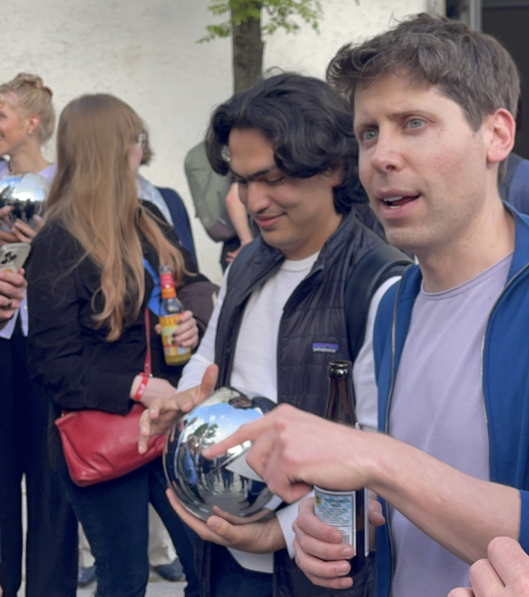

Introduction
At a recent event at my alma mater, TU Munich featuring Sam Altman, CEO of OpenAI, attendees had the opportunity to delve into a range of topics. From AI regulation, the release of future OpenAI models, to the importance of the user interface in technology, the event was a wellspring of insights. But before I share my key takeaways, let me tell you about my intriguing journey to the event.
Tickets for this event were sold out within 20 minutes. However, as adage goes
Modern problems, require modern solutions.
So with some innovation and the assistance of ChatGPT, I secured a ticket.
Guess what? Used chatGPT to get access to event featuring @sama
— Muhtasham Oblokulov (@Muhtasham9) May 25, 2023
First, generated JavaScript code to check availability of new tickets, did not succeed.
Crafted a killer press representative email for @MunichNlp and got it! 🎫
Big shoutout to @DLDConference for organizing this pic.twitter.com/k6GtTZ0TJo
AI Regulation: A Pragmatic View
Altman expressed his support for AI regulation, but emphasized the necessity for such regulations to be implemented correctly, and not just for the sake of regulation. His belief is that these should come into effect above a specific capability threshold, implying a nuanced approach that doesn’t stifle innovation but still ensures safety and ethical use of AI technology.
The Role of AI Tools in Research
OpenAI engineers and researchers are utilizing tools such as Copilot in their work. Copilot, which builds on the capability of the codex model by OpenAI, exemplifies how AI has become instrumental in driving innovative research, enabling researchers to augment their abilities and achieve more than was previously possible.
The Importance of User Interface
Altman stressed on the significance of the User Interface (UI) in technology. He posited that natural language turns out to be an excellent UI for humans, reinforcing the premise that technology should be built to align with human behavior and preferences, rather than the other way around. This underlines the importance of intuitive, user-friendly design in making complex AI systems accessible and easy to use.

OpenAI’s Future Plans
Altman revealed plans to release more open-source models in the future, however, he clarified that this would not extend to the upcoming GPT-5 etc. Despite being a non-profit, Altman acknowledged the significance of the open-source market, indicating OpenAI’s continued commitment to the wider community.
He also highlighted the importance of getting the 200 small things right and jointly optimizing across the stack. These ‘small things’ could refer to everything from the model’s architecture, to training data, to the end application UI, demonstrating the meticulous nature of OpenAI’s approach.
What’s Next After Large Language Models (LLMs)?
The future of AI, according to Altman, involves looking for the next big thing after LLMs. While the specifics were not discussed, the pursuit of groundbreaking innovation is clearly at the core of OpenAI’s mission.
Views of LLMs
A noteworthy insight from Altman was his characterization of LLMs. He emphasized that people should not think of LLMs as databases, they are not updated in real-time, but rather they should be thought of as reasoning engines. With the help of certain retrievers, these LLMs can address the issue of up-to-date knowledge, suggesting the future development of LLMs may involve closer integration with real-time data sources.
Altman also mentioned prompt injection for the first time in a public. While also noting the possibility that LLMs might not be suited for certain purposes, he assured attendees that new approaches are being worked on, indicating exciting advancements on the horizon.
Conclusion
Sam Altman’s talk offered valuable perspectives on the path of AI, emphasizing effective AI regulations, the importance of user-friendly interfaces, and the continued commitment to the open-source ecosystem. He underscored the role of Large Language Models (LLMs) as reasoning engines and touched upon their future development. In essence, Altman’s insights paint a future of AI that’s effectively regulated, user-centric, and collaborative, while continuously evolving to meet real-time information needs. His conversation reinforces the dynamic nature of AI and the importance of responsible stewardship as we navigate this rapidly evolving landscape.
Thanks for reading! If you enjoyed this article, please consider sharing it on social media. You can also follow me on Twitter for more content like this.
For a more immersive experience, you can watch a segment of Sam Altman’s talk in the video below: